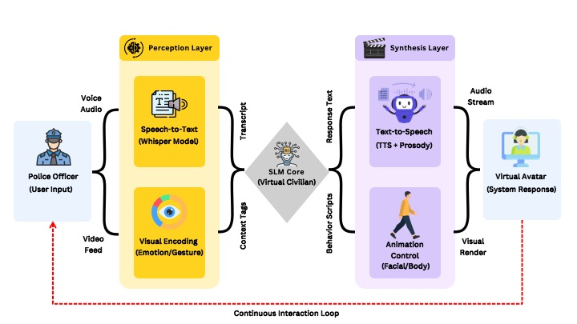

1 Department of Computer Science and Engineering
The University of Texas at Arlington
2 Department of Industrial, Manufacturing, and Systems Engineering
The University of Texas at Arlington

Overview of DeEscalWild.
Effective de-escalation is a cornerstone of modern policing, directly impacting officer safety and public trust. Traditional training methods—such as static role-playing or branching video scenarios—often fail to capture the unpredictability of real-world conflict.
The Challenge: The "Compute vs. Reality" Deadlock
Recent advances in Generative AI offer a solution: dynamic, open-ended conversations with AI agents. However, deploying these systems creates a technical deadlock:
Large Language Models (LLMs) offer great reasoning but require massive computing power, making them too slow or heavy for standalone VR headsets.
Small Language Models (SLMs) are efficient and portable but typically lack the nuanced reasoning required for high-stakes de-escalation.
Our Solution: Data-Driven Efficacy at the Edge
The missing link is high-quality training data. Existing datasets often treat police dialogue as archival evidence rather than a tool for active training. DeEscalWild changes this paradigm.
We constructed a pipeline specifically for "SLM Efficacy at the Edge." By mining and rigorously filtering 5,000 raw videos into a curated corpus of 285,887 dialogue turns, we created a standardized benchmark for conflict resolution. Our experiments prove that a specialized SLM, fine-tuned on real-world data, can outperform general-purpose giants (like Gemini 2.5 Flash) while remaining efficient enough for real-time, on-device deployment.
Key Contributions
The DeEscalWild Benchmark: A curated dataset of 1,500 scenarios (approx. 4.7M tokens) filtered via a "Human-in-the-loop" and "LLM-as-a-Judge" process.
Real-World Fidelity: Unlike synthetic datasets, our corpus captures the raw, unstructured, and emotional nature of real-world police-civilian interactions.
Edge-Ready Performance: We demonstrate that fine-tuned SLMs (e.g., Qwen 2.5 3B) achieve superior performance on ROUGE-L and BERTScore metrics compared to larger models, validating the use of portable hardware for immersive training.
DeEscalWild is a real-world benchmark and dataset designed to modernize police de-escalation training. While Virtual Reality (VR) and AI offer immersive training possibilities, current systems struggle with a critical trade-off: they are either too computationally heavy for portable headsets or lack the domain-specific data needed for realistic interactions.
We bridge this gap by introducing DeEscalWild—the first large-scale dataset derived from "in-the-wild" police-civilian interactions found on open-source platforms like YouTube and TikTok. By curating over 1,500 high-quality scenarios and fine-tuning Small Language Models (SLMs) like Qwen 2.5 (3B), we demonstrate that compact, portable AI can outperform massive, general-purpose models in specialized de-escalation tasks, enabling realistic training on lightweight hardware.
Summary statistics of the DeEscalWild dataset
Total Files (Scenarios)
Dialogue Turns
Total Word Count
Token Count (Est.)
| Model | ROUGE-L | BLEU-4 | METEOR | BERTScore (F1) | ||||
|---|---|---|---|---|---|---|---|---|
| Base | FT (∆) | Base | FT (∆) | Base | FT (∆) | Base | FT (∆) | |
| Qwen 2.5 (3B-Instruct) | 11.2 | 15.8 ↑4.5 | 0.9 | 3.8 ↑3.0 | 15.7 | 19.5 ↑3.9 | 0.86 | 0.88 ↑0.01 |
| Llama 3.2 (3B-Instruct) | 11.3 | 14.8 ↑3.5 | 0.6 | 2.3 ↑1.7 | 15.7 | 17.8 ↑2.2 | 0.86 | 0.87 ↑0.01 |
| Gemma 2 (2B-Instruct) | 7.2 | 14.8 ↑7.6 | 0.4 | 1.9 ↑1.5 | 11.7 | 16.2 ↑4.5 | 0.81 | 0.87 ↑0.06 |
| Granite 3.0 (2B-Instruct) | 10.2 | 15.5 ↑5.3 | 1.2 | 2.2 ↑1.0 | 13.5 | 16.8 ↑3.3 | 0.83 | 0.87 ↑0.04 |
| Falcon 3 (3B-Instruct) | 9.2 | 11.3 ↑2.1 | 0.5 | 1.2 ↑0.7 | 12.4 | 15.5 ↑3.1 | 0.83 | 0.85 ↑0.02 |
Table 3. Performance Comparison. Comparison of base and fine-tuned models. The subscript indicates the increase (↑) from the base model. Best results are in bold. Metrics are scaled by 100, except BERTScore (0-1).
| Model | ROUGE-L | BLEU-4 | METEOR | BERTScore (F1) | Avg. Inference Latency (sec) |
|---|---|---|---|---|---|
| Qwen 2.5 (3B-Instruct) FT | 15.8 | 3.8 | 19.5 | 0.88 | 0.38 |
| Llama 3.2 (3B-Instruct) FT | 14.8 | 2.3 | 17.8 | 0.87 | 0.44 |
| Gemma 2 (2B-Instruct) FT | 14.8 | 1.9 | 16.2 | 0.87 | 0.33 |
| Granite 3.0 (2B-Instruct) FT | 15.5 | 2.2 | 16.8 | 0.87 | 0.30 |
| Falcon 3 (3B-Instruct) FT | 11.3 | 1.2 | 15.5 | 0.85 | 0.41 |
| Gemini 2.5 Flash (Baseline) | 12.4 | 1.1 | 13.2 | 0.85 | 3.50 |
Table 4. Final Performance and Latency Comparison. Comparison of fine-tuned small models against the prompt-engineered Gemini 2.5 Flash baseline. The fine-tuned Qwen 2.5 (3B) model outperforms the large-scale baseline across all four quality metrics. While Qwen offers significantly faster inference than the baseline, Granite 3.0 achieves the lowest overall average inference latency of 0.30s.
@unpublished{
hasan2026DeEscalWild,
title = {DeEscalWild: A Real-World Benchmark for Automated De-Escalation Training with {SLMs}},
author = {Hasan, Md Hasebul and Charu, Krity Haque and Sridhar, Eshwara Prasad and Deb, Shuchisnigdha and Islam, Mohammad A.},
note = {Submitted to the 43rd International Conference on Machine Learning (ICML)},
year = {2026}
}